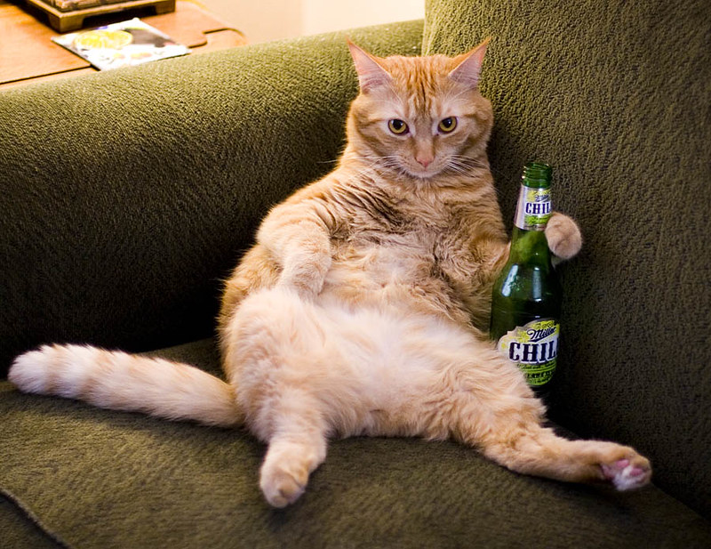

НГТУ, ФБ, Лабораторная работа 5

Фильтр: blur(0px)
Наведите мышь на картинку для размытия.
Зажмите
Ctrl
— серый цвет (grayscale).
Зажмите
Alt
— смена оттенка (hue-rotate).
Зажмите
Shift
— инверсия цветов (invert).
Эффект увеличивается справа налево.